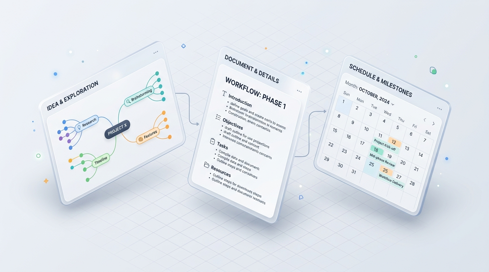
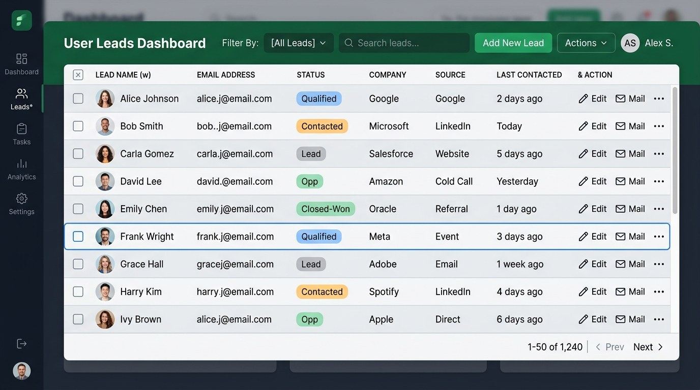
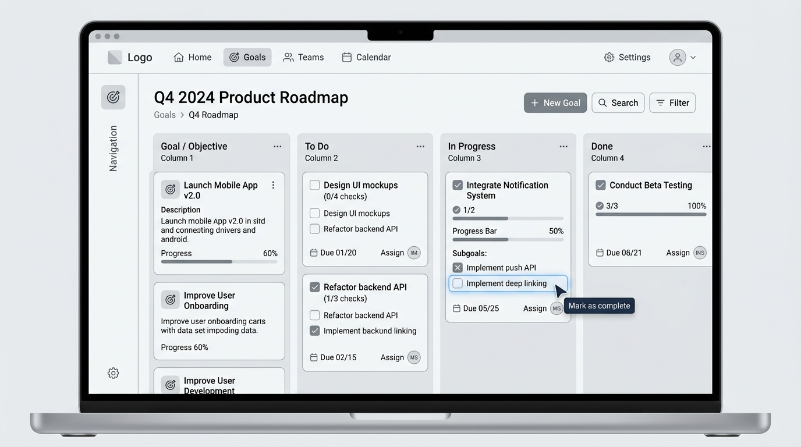

IRYSS
About
IRYSS CRM was designed for enterprise sales teams that manage large volumes of leads, companies, and customer interactions every day.
Outcome
The final product delivers a complete enterprise CRM experience: from a single overview table sales reps focus on managing customer relationships and internal collaborations.
The interface prioritizes high-density data with clear visual hierarchy, making complex information easy to read without overwhelming users.
By using reusable components, consistent interaction patterns, and scalable layout specifications, the system is ready for real-world use and fast front-end implementation.

Problem
Sales teams deal with hundreds of customer records every day, but most of their time is spent navigating between pages instead of taking action.
Updating a lead, scheduling a meeting, or adding a note requires opening a record, updating customer history, often requiring opening multiple screens and repeating the same steps.
As the volume of data grows, CRM interface becomes hard to read, making important information hard to see.
The challenge was designing a CRM that keeps large amounts of data organized while allowing users to complete common tasks with as little friction as possible.

Research
Before designing the interface, I mapped the daily workflow of sales representatives and managers to understand how information moves across the product.
Sales representatives move from a main Lead Table into individual Leads/Profiles where actions are needed, such as updates to customer information, activity history, messages, notes, files, and scheduled tasks.
Several patterns became clear during the research:
- Every rep spend most of their time inside data tables.
- Searching and filtering happen more frequently than creating new records.
- Customer information changes constantly, so editing should never interrupt the workflow.
- Reps want similarity across multiple screens without learning new interface complexity.
These findings influenced almost every design decision, from navigation and filtering to table editing and reusable layouts.

Product System
As the product expanded, I kept noticing the same challenge consistently.
IRYSS CRM isn't just a single dashboard, it's a connected system of lead management, companies, deal pipelines, tasks, meeting workflows, and administrative tools. Every module has a different purpose, but all of them should feel like a coherent product.
That consistency became the foundation of the experience.
Sales representatives shouldn't have to learn new interface logic every time they move from the Lead Table to a customer profile, or from Tasks to Calendar. Once they understand one section, the overall product becomes familiar.
I built the system around the same design principles: shared layouts, reusable components, and scalable patterns allowed every screen to work together as a system instead of separate pages.
This approach influenced every design decision:
Instead of introducing new patterns for each feature, I focused on standardizing:
- reusable tables across every management page
- consistent filters and saved views
- shared forms and inline editing patterns
- unified navigation and action menus
As new features were added, the system could grow without losing consistency. Every new feature reused familiar patterns, reducing the learning curve for both users and developers.
I didn't design each screen as an isolated interface. I designed a system that keeps complex workflows structured, predictable, and easy to navigate every day.

Role
I was responsible for designing the product from the ground up, turning complex business workflows into a scalable CRM experience.
Throughout the project, I worked across every stage of the design process:
- UX research
- User flows
- UI design
- Design system
- Interactive prototyping
- Developer handoff
This project marked my first time building and shipping a SaaS product on a enterprise platform with production-ready reusable components and workflows that could support different teams and roles across the organization.
Learnings
1. Designing a CRM is about workflows, not screens.
Early in the project, I realized that users don't experience a product page by page. They move between tasks, lists, metrics, and details.
That shifted my focus from designing isolated UI screens to streamlining smooth end-to-end workflows.
2. Consistency reduces complexity.
Instead of introducing new layouts and interaction patterns for every feature, I relied on a consistent system of navigation, tables, forms, filters, and actions that users could recognize throughout the product.
This consistency made the CRM easier to learn and easier to scale.
3. Small interactions have a big impact.
Many daily actions happen dozens of times.
Fast feedback for quick edits, quick actions, custom filters, and reusable modals prevented unnecessary steps and helped users complete tasks without leaving their main workflow.
Those small improvements had a much bigger impact than adding more features.
4. A design system is a product investment.
A modular design system was the foundation of every screen.
Reusable components, shared interaction patterns, and standardized layout tokens reduced design inconsistency, simplified developer handoff, and made future expansion much faster.